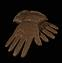
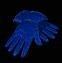
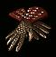
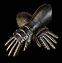
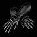
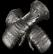

|

La Mano Blisterpain Guantes de Cuero |
Defensa: 33-43 Nivel: 11 Durabilidad: 12 +15% Velocidad de Ataque Aumentada +5 al Daño Máximo Añade 12-18 de Daño de Fuego Evita la Curación del Monstruo +30-40 Defensa Resistencia al Fuego +45% |
|

Mano de Goblin Goblin Touch Guantes de Cuero |
Defensa: 13-23 Nivel: 8 Durabilidad: 12 +75 de Puntuación de Ataque +100% Daño a los Demonios +10-20 Defensa Resistencia al Veneno +15-25% +10-15 Vida tras cada Muerte de Demonio Repara 1 de Durabilidad en 10 Segundos |
|
La Mano de Broc The Hand of Broc Guantes de Cuero |
Defensa: 13-14 Nivel: 5 Durabilidad: 12 +10-20% Defensa Perfeccionada +10 Defensa 3% Vida Robada por Impacto 3% Maná Robado por Impacto Resistencia al Veneno +10% +20 de Maná |
|
Libertador Healing Touch Guantes Pesados |
Defensa: 41-51 Nivel: 18 Durabilidad: 14 6-8% Vida Robada por Impacto +35-45 Defensa Repostar Vida +3-5 Regenerar Maná 35% +4-6 al Maná tras cada Muerte +4-7 Vida después de cada Muerte |
|
El Amigo Fiendfeast Guantes Pesados |
Defensa: 26-31 Nivel: 14 Durabilidad: 14 +50% Daño a los Demonios +50% Daño a los Muertos Vivientes 4-6% Maná Robado por Impacto +20-25 Defensa Daño Reducido en 5-10% 25% Oro Extra de los Monstruos 15% más Posibilidades de conseguir un Objeto Mágico |
|
Puño Sangriento Bloodfist Guantes Pesados |
Defensa: 15-17 Nivel: 9 Durabilidad: 14 +10-20% Defensa Perfeccionada +10 Defensa 10% Velocidad de Ataque Aumentada 30% Recuperacion de Impacto más Rápida +5 al Daño Mínimo +40 de Vida |
|

Manos de Horseman Horseman's Gloves Guantes de Malla |
Defensa: 49-59 Nivel: 20 Fuerza: 25 Durabilidad: 16 +1-3 para Habilidades de Frío (Sólo Hechicera) +10% Velocidad de Ataque Aumentada +40-50 Defensa +30 de Vida Resistencia al Veneno +15-25% Daño Reducido en 7-10% |
|
Manos Verdes Green God's Bracers Guantes de Malla |
Defensa: 18-19 Nivel: 25 Fuerza: 25 Durabilidad: 16 +3 para Habilidades de Rayos (Sólo Hechicera) +15% Velocidad de Ataque Aumentada Añade 1-35 de Daño de Relámpago +100-115% Defensa Perfeccionada +25-35 de Vida Todas las Resistencias +10-20 |
|
Guardias de la Suerte Chance Guards Guantes de Malla |
Defensa: 24-26 Nivel: 15 Fuerza: 25 Durabilidad: 16 +25 a Puntuación de Ataque +20-30% Defensa Perfeccionada +15 Defensa 200% Oro Extra de los Monstruos +25-40% más Posibilidades de Conseguir un Objeto Mágico +2 al Radio de Luz |
|

Guantes Prismaticos Prismatic Gauntlets Guanteletes Ligeros |
Defensa: 56-66 Nivel: 30 Fuerza: 45 Durabilidad: 18 +20% Velocidad de Ataque Aumentada +3-5 al Daño Mínimo Añade 15-30 de Daño de Fuego Añade 15-30 de Daño de Relampago Añade 15-30 de Daño de Frío +45-55 Defensa +5 a Todos los Atributos Todas las Resistencias +20-30 |
|

Huellas de Skain Skein of Pain Guanteletes Ligeros |
Defensa: 24-26 Nivel: 18 Fuerza: 45 Durabilidad: 18 +10% Velocidad de Ataque Aumentada +3-12 al Daño Mínimo +120-140% Defensa Perfeccionada +20 de Maná Resistencia a los Rayos +20-40% Resistencia al Fuego +15-25% |
|
Puño del Mago Magefist Guanteletes Ligeros |
Defensa: 20-24 Nivel: 23 Fuerza: 45 Durabilidad: 16 +20-30% Defensa Perfeccionada +10 Defensa +1 a las Habilidades de Fuego +20% Velocidad de Lanzamiento Mayor Añade 1-6 de Daño de Fuego Regenerar Maná 25% |
|

Guantes de Viridian Viridian Gloves Guanteletes |
Defensa: 65-75 Nivel: 33 Fuerza: 45 Durabilidad: 24 +10% Velocidad de Lanzamiento Mayor +75 de Puntuacion de Ataque Ralentiza el Objetivo un 15% +50-60 Defensa +15 de Destreza Resistencia al Fuego +25% Requisitos -25% |
|
Manoplas de Fuego Firesign Guanteletes |
Defensa: 33-37 Nivel: 31 Fuerza: 60 Durabilidad: 24 +1 a las Habilidades de Fuego Añade 20-35 de Daño de Fuego +150% Defensa Perfeccionada +5% a la Resistencia Máxima al Fuego Resistencia al Fuego +35-45% Absorción de Fuego 5% Mitad de Duración del Congelamiento +2-4 al Radio de Luz |
|
Quemadura Glacial Frostburn Guanteletes |
Defensa: 43-48 Nivel: 29 Fuerza: 60 Durabilidad: 24 5% Daño Mejorado Añade 1-6 de Daño de Frio. Duración dos segundos en normal. +10-20% Defensa Perfeccionada +30 Defensa Aumenta el Maná Máximo 40% |